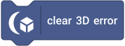

Metrics, Profiling & Debug
Reference index · Conventions and lifecycle
- Engine, output and errors
- Model and geometry resources
- Materials and PBR
- Lighting, shadows and environments
- Animation and skinning
- Sprites, particles, decals and text
- Visibility, spatial index and LOD
- Physics and audio
- Post processing and targets
- Custom rendering
- Raycasting, terrain and tweens
Engine, output and errors
Renderer backend returns the active backend name; FPS and average FPS describe host/update pacing rather than GPU throughput. Draw calls and internal width/height/pixel-count/pixel-ratio describe actual renderer output. The three-draw static baseline and scenario comparisons are historical performance evidence, not a promise for every material/feature combination.
lastError is the latest extension diagnostic. Clear it before isolating a new operation, then read it after a failure. Missing-resource typed queries can update this diagnostic, whereas existence probes are quiet. Metric reads do not create a renderer, force a frame, poll a GPU query or allocate optional subsystems. See performance methodology.
rendererBackend
Returns text. Selectors and units are listed below; the family guide explains which retained state is read.
currentFps
Returns number. Selectors and units are listed below; the family guide explains which retained state is read.
averageFps
Returns number. Selectors and units are listed below; the family guide explains which retained state is read.
drawCalls
Returns number. Selectors and units are listed below; the family guide explains which retained state is read.
internalRenderDimension
Returns number. Selectors and units are listed below; the family guide explains which retained state is read.
| Argument | Input / default | Accepted menu choices |
|---|---|---|
DIMENSION |
string; width |
width, height |
effectivePixelRatio
Returns number. Selectors and units are listed below; the family guide explains which retained state is read.
internalRenderPixels
Returns number. Selectors and units are listed below; the family guide explains which retained state is read.
lastError
Returns text. Selectors and units are listed below; the family guide explains which retained state is read.
clearError

Command. See the group guide above.
Model and geometry resources
Asset/geometry counts describe retained resources, not visible instances. Geometry GPU bytes describe cached GPU allocation, excluding unrelated textures/post targets. Geometry upload counts expose upload activity; compare changes after edits and renderer recreation, not just steady-state counts.
A shared geometry can have many instances with one allocation. Deleted consumers must release references before named assets disappear. Pair these counters with visible-instance and draw-call counters to distinguish resource ownership from submission cost.
modelAssetCount
Returns number. Selectors and units are listed below; the family guide explains which retained state is read.
loadedGeometryCount
Returns number. Selectors and units are listed below; the family guide explains which retained state is read.
geometryGpuBytes
Returns number. Selectors and units are listed below; the family guide explains which retained state is read.
geometryUploads
Returns number. Selectors and units are listed below; the family guide explains which retained state is read.
Materials and PBR
Material count is retained logical resources. Program counts/compile counters concern renderer shader caches; program/material/texture switches and PBR draws concern submission. A first draw or warmup can compile even though a material was created earlier.
Compare steady frames after warmup. Sharing compatible materials reduces switches/batches; repeatedly creating equivalent names is not a shader-performance strategy. PBR programs/draws distinguish PBR usage from unlit/basic-lit/custom rendering.
materialCount
Returns number. Selectors and units are listed below; the family guide explains which retained state is read.
materialPrograms
Returns number. Selectors and units are listed below; the family guide explains which retained state is read.
materialShaderCompiles
Returns number. Selectors and units are listed below; the family guide explains which retained state is read.
materialProgramSwitches
Returns number. Selectors and units are listed below; the family guide explains which retained state is read.
materialSwitches
Returns number. Selectors and units are listed below; the family guide explains which retained state is read.
textureSwitches
Returns number. Selectors and units are listed below; the family guide explains which retained state is read.
pbrPrograms
Returns number. Selectors and units are listed below; the family guide explains which retained state is read.
pbrDrawCalls
Returns number. Selectors and units are listed below; the family guide explains which retained state is read.
Lighting, shadows and environments
Active lights count configured enabled local lights; selected lights describe the bounded renderer list. List rebuilds, GPU uploads and selection milliseconds expose dirty work. Local-light draw counts reflect draws using that path, not one draw per light.
Shadow time/draws/triangles/casters/maps-updated describe shadow work; cached static maps can mean zero updates. Environment preprocess time/count/resources expose source/quality preparation, while IBL/background draws describe use. Rotation/intensity changes should not be interpreted as source preprocessing. Record backend and enabled features with every comparison.
activeLocalLightCount
Returns number. Selectors and units are listed below; the family guide explains which retained state is read.
selectedLocalLightCount
Returns number. Selectors and units are listed below; the family guide explains which retained state is read.
localLightListRebuilds
Returns number. Selectors and units are listed below; the family guide explains which retained state is read.
localLightGpuUploads
Returns number. Selectors and units are listed below; the family guide explains which retained state is read.
localLightDrawCalls
Returns number. Selectors and units are listed below; the family guide explains which retained state is read.
localLightSelectionTime
Returns number. Selectors and units are listed below; the family guide explains which retained state is read.
shadowRenderTime
Returns number. Selectors and units are listed below; the family guide explains which retained state is read.
shadowDrawCalls
Returns number. Selectors and units are listed below; the family guide explains which retained state is read.
shadowTriangles
Returns number. Selectors and units are listed below; the family guide explains which retained state is read.
shadowCasters
Returns number. Selectors and units are listed below; the family guide explains which retained state is read.
shadowMapsUpdated
Returns number. Selectors and units are listed below; the family guide explains which retained state is read.
environmentPreprocessTime
Returns number. Selectors and units are listed below; the family guide explains which retained state is read.
environmentPreprocesses
Returns number. Selectors and units are listed below; the family guide explains which retained state is read.
environmentResources
Returns number. Selectors and units are listed below; the family guide explains which retained state is read.
environmentIblDrawCalls
Returns number. Selectors and units are listed below; the family guide explains which retained state is read.
environmentBackgroundDrawCalls
Returns number. Selectors and units are listed below; the family guide explains which retained state is read.
Animation and skinning
Players/channels and animation-sampling milliseconds describe CPU pose work. Joint-palette upload count/bytes describe changed GPU skinning data. Skinned main/shadow draws describe renderer submission, which may differ when shadows are disabled or an instance is culled.
Paused/static poses should reuse palettes; additional cameras must not advance clip time. Use animation state plus these counters to distinguish logical playback from visible or uploaded work.
activeAnimationPlayers
Returns number. Selectors and units are listed below; the family guide explains which retained state is read.
sampledAnimationChannels
Returns number. Selectors and units are listed below; the family guide explains which retained state is read.
animationSamplingTime
Returns number. Selectors and units are listed below; the family guide explains which retained state is read.
jointPaletteUploads
Returns number. Selectors and units are listed below; the family guide explains which retained state is read.
jointPaletteUploadBytes
Returns number. Selectors and units are listed below; the family guide explains which retained state is read.
skinnedDrawCalls
Returns number. Selectors and units are listed below; the family guide explains which retained state is read.
skinnedShadowDrawCalls
Returns number. Selectors and units are listed below; the family guide explains which retained state is read.
Sprites, particles, decals and text
Sprite/decal/text counts distinguish retained from visible instances and actual draws. Sprite upload bytes and directional-frame changes expose packing/atlas selection; camera-facing quads do not imply new geometry. Text rasterizations/uploads/shared textures separate expensive content changes from cheap transform changes.
Particle counters distinguish active emitters/particles, spawned/expired particles, simulation milliseconds, visible/culled emitters and uploaded bytes/draws. A culled emitter may still simulate. Low draw count does not eliminate blended overdraw or CPU simulation cost. Read counters after a representative frame and retain the scene/quality settings alongside them.
spriteCount
Returns number. Selectors and units are listed below; the family guide explains which retained state is read.
visibleSpriteCount
Returns number. Selectors and units are listed below; the family guide explains which retained state is read.
spriteDrawCalls
Returns number. Selectors and units are listed below; the family guide explains which retained state is read.
spriteInstanceUploadBytes
Returns number. Selectors and units are listed below; the family guide explains which retained state is read.
directionalFrameChanges
Returns number. Selectors and units are listed below; the family guide explains which retained state is read.
activeParticleEmitters
Returns number. Selectors and units are listed below; the family guide explains which retained state is read.
totalActiveParticles
Returns number. Selectors and units are listed below; the family guide explains which retained state is read.
particlesSpawned
Returns number. Selectors and units are listed below; the family guide explains which retained state is read.
particlesExpired
Returns number. Selectors and units are listed below; the family guide explains which retained state is read.
particleSimulationTime
Returns number. Selectors and units are listed below; the family guide explains which retained state is read.
visibleParticleEmitters
Returns number. Selectors and units are listed below; the family guide explains which retained state is read.
culledParticleEmitters
Returns number. Selectors and units are listed below; the family guide explains which retained state is read.
particleInstanceUploadBytes
Returns number. Selectors and units are listed below; the family guide explains which retained state is read.
particleDrawCalls
Returns number. Selectors and units are listed below; the family guide explains which retained state is read.
decalCount
Returns number. Selectors and units are listed below; the family guide explains which retained state is read.
visibleDecalCount
Returns number. Selectors and units are listed below; the family guide explains which retained state is read.
decalDrawCalls
Returns number. Selectors and units are listed below; the family guide explains which retained state is read.
textLabelCount
Returns number. Selectors and units are listed below; the family guide explains which retained state is read.
textRasterizations
Returns number. Selectors and units are listed below; the family guide explains which retained state is read.
textTextureUploads
Returns number. Selectors and units are listed below; the family guide explains which retained state is read.
sharedTextTextures
Returns number. Selectors and units are listed below; the family guide explains which retained state is read.
renderedTextInstances
Returns number. Selectors and units are listed below; the family guide explains which retained state is read.
textDrawCalls
Returns number. Selectors and units are listed below; the family guide explains which retained state is read.
Visibility, spatial index and LOD
Visibility counters follow different stages: total renderables, broad/spatial candidates, frustum tests/rejects, distance rejects and final visible renderables/instances. Do not subtract unrelated counters as if they all shared the same denominator. Timings are CPU milliseconds for the named visibility/spatial work.
Spatial entries, incremental updates/rebuilds and dirty/animated bounds describe retained index maintenance. Visible-instance upload bytes measure packed upload work. LOD evaluations/switches and per-level counts explain selected static detail. Shadow visibility candidates/rejects/casters describe the light view, which can differ from camera visibility.
Compare unchanged and edited frames to confirm caching; a metric read is not an instruction to rebuild anything. Force a relevant render/update before interpreting last-frame counters, and keep LOD/culling/image-quality policies equivalent across benchmark engines.
totalRenderables
Returns number. Selectors and units are listed below; the family guide explains which retained state is read.
visibilityCandidates
Returns number. Selectors and units are listed below; the family guide explains which retained state is read.
spatialCandidates
Returns number. Selectors and units are listed below; the family guide explains which retained state is read.
frustumTests
Returns number. Selectors and units are listed below; the family guide explains which retained state is read.
frustumRejected
Returns number. Selectors and units are listed below; the family guide explains which retained state is read.
renderDistanceRejected
Returns number. Selectors and units are listed below; the family guide explains which retained state is read.
visibleRenderables
Returns number. Selectors and units are listed below; the family guide explains which retained state is read.
visibleInstances
Returns number. Selectors and units are listed below; the family guide explains which retained state is read.
culledInstances
Returns number. Selectors and units are listed below; the family guide explains which retained state is read.
visibilityCpuTime
Returns number. Selectors and units are listed below; the family guide explains which retained state is read.
spatialQueryCpuTime
Returns number. Selectors and units are listed below; the family guide explains which retained state is read.
spatialIndexEntries
Returns number. Selectors and units are listed below; the family guide explains which retained state is read.
spatialIndexUpdates
Returns number. Selectors and units are listed below; the family guide explains which retained state is read.
spatialIndexRebuilds
Returns number. Selectors and units are listed below; the family guide explains which retained state is read.
dirtyBounds
Returns number. Selectors and units are listed below; the family guide explains which retained state is read.
animatedBounds
Returns number. Selectors and units are listed below; the family guide explains which retained state is read.
visibleInstanceUploadBytes
Returns number. Selectors and units are listed below; the family guide explains which retained state is read.
lodEvaluations
Returns number. Selectors and units are listed below; the family guide explains which retained state is read.
lodSwitches
Returns number. Selectors and units are listed below; the family guide explains which retained state is read.
lodLevelInstanceCount
Returns number. Selectors and units are listed below; the family guide explains which retained state is read.
| Argument | Input / default | Accepted menu choices |
|---|---|---|
LEVEL |
number; 1 |
— |
shadowVisibilityCandidates
Returns number. Selectors and units are listed below; the family guide explains which retained state is read.
shadowFrustumRejected
Returns number. Selectors and units are listed below; the family guide explains which retained state is read.
shadowVisibleCasters
Returns number. Selectors and units are listed below; the family guide explains which retained state is read.
Physics and audio
Physics metric menus expose body/contact/broad-phase/solver/timing and overflow counters; audio metric menus expose assets/sources/context/cache/playback/update work. Their units are specified in each menu label (counts, bytes or milliseconds where applicable).
These reporters remain zero-work when the optional subsystem has never been created. Read contact overflow and substep/work metrics when diagnosing dense scenes; read audio context/cache counts when checking restart/reload ownership. Build/integrity tests alone do not prove audible output or autoplay recovery.
physicsMetric
Returns number. Selectors and units are listed below; the family guide explains which retained state is read.
| Argument | Input / default | Accepted menu choices |
|---|---|---|
METRIC |
string; steps |
steps, integrated, candidates, narrowTests, gridUpdates, droppedTime, contactOverflows |
audioMetric
Returns number. Selectors and units are listed below; the family guide explains which retained state is read.
| Argument | Input / default | Accepted menu choices |
|---|---|---|
METRIC |
string; decodes |
contexts, decodes, voices, listenerUpdates, sourceUpdates |
Post processing and targets
Post pass/fullscreen-draw and bloom-pass counters show executed image passes; neutral post should keep the direct path. Target allocation/resize/byte counters distinguish storage from camera draws. Named double buffering consumes more storage than one color image.
Post shader compiles track preparation; offscreen camera renders count explicit target work. Rendering multiple cameras adds draw work but never additional simulation updates. Capture steady state separately from first use, resize and renderer recreation.
postProcessingPassCount
Returns number. Selectors and units are listed below; the family guide explains which retained state is read.
postFullscreenDraws
Returns number. Selectors and units are listed below; the family guide explains which retained state is read.
renderTargetAllocations
Returns number. Selectors and units are listed below; the family guide explains which retained state is read.
renderTargetResizes
Returns number. Selectors and units are listed below; the family guide explains which retained state is read.
renderTargetBytes
Returns number. Selectors and units are listed below; the family guide explains which retained state is read.
bloomPasses
Returns number. Selectors and units are listed below; the family guide explains which retained state is read.
postShaderCompiles
Returns number. Selectors and units are listed below; the family guide explains which retained state is read.
offscreenCameraRenders
Returns number. Selectors and units are listed below; the family guide explains which retained state is read.
Custom rendering
The metric selector reports custom program/compile, numeric/sampler uniform upload, geometry upload and draw counters. Compile attempts and upload events accumulate for the renderer lifetime; custom draws describe the last render. Engine matrix/size/opacity uniforms are outside the user-uniform-upload counter.
Uniform value changes do not invalidate program identity. Repeated unchanged frames should not recompile or reupload unchanged numeric fields. Sampler bindings can be refreshed as target handles change. First custom draw/warmup creates the optional program cache; merely reading a metric does not.
customRenderingMetric
Returns number. Selectors and units are listed below; the family guide explains which retained state is read.
| Argument | Input / default | Accepted menu choices |
|---|---|---|
METRIC |
string; shader draws |
shader compiles, shader draws, uniform uploads, geometry uploads |
Raycasting, terrain and tweens
Ray counters distinguish query count, broad-phase candidates, bounds/triangle tests, hits and CPU milliseconds. A hit reporter does not increment them; a new cast does. Bounds-precision skinned hits are not evidence of triangle testing.
Terrain counters expose named terrain count, triangles, geometry builds and GPU upload counts/bytes plus visible/culled chunks. Each current terrain is one finite chunk. Tween counters expose active records, updates/completions and update milliseconds. Query these after the relevant update rather than treating an idle zero as a missing feature.
raycastCount
Returns number. Selectors and units are listed below; the family guide explains which retained state is read.
raycastBroadPhaseCandidates
Returns number. Selectors and units are listed below; the family guide explains which retained state is read.
raycastBoundsTests
Returns number. Selectors and units are listed below; the family guide explains which retained state is read.
raycastTriangleTests
Returns number. Selectors and units are listed below; the family guide explains which retained state is read.
raycastHits
Returns number. Selectors and units are listed below; the family guide explains which retained state is read.
raycastTime
Returns number. Selectors and units are listed below; the family guide explains which retained state is read.
terrainCount
Returns number. Selectors and units are listed below; the family guide explains which retained state is read.
terrainTriangles
Returns number. Selectors and units are listed below; the family guide explains which retained state is read.
terrainGeometryBuilds
Returns number. Selectors and units are listed below; the family guide explains which retained state is read.
terrainGpuUploads
Returns number. Selectors and units are listed below; the family guide explains which retained state is read.
terrainGpuUploadBytes
Returns number. Selectors and units are listed below; the family guide explains which retained state is read.
visibleTerrainChunks
Returns number. Selectors and units are listed below; the family guide explains which retained state is read.
culledTerrainChunks
Returns number. Selectors and units are listed below; the family guide explains which retained state is read.
activeTweens
Returns number. Selectors and units are listed below; the family guide explains which retained state is read.
tweenUpdates
Returns number. Selectors and units are listed below; the family guide explains which retained state is read.
completedTweens
Returns number. Selectors and units are listed below; the family guide explains which retained state is read.
tweenUpdateTime
Returns number. Selectors and units are listed below; the family guide explains which retained state is read.